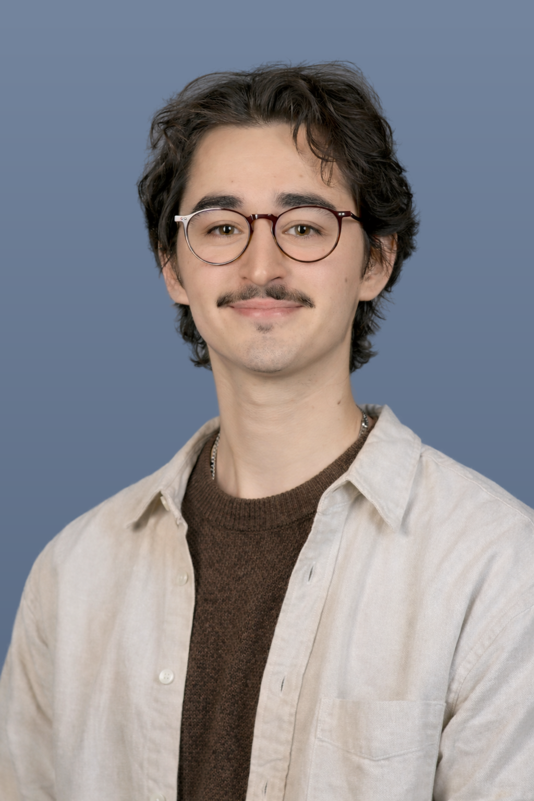

I'm a first-year PhD student in the Micro MORS group at UC Berkeley Haas.
Prior to Haas, I was a Behavioral Research Fellow at Northwestern Kellogg working with Dr. Jacob Teeny and Dr. Chethana Achar.
My research focuses on interpersonal communication and social perception in the workplace.
Before Kellogg, I worked in the Social Interdependence Lab at Gonzaga University and completed my thesis with Dr. Rebecca Bull Schaefer.